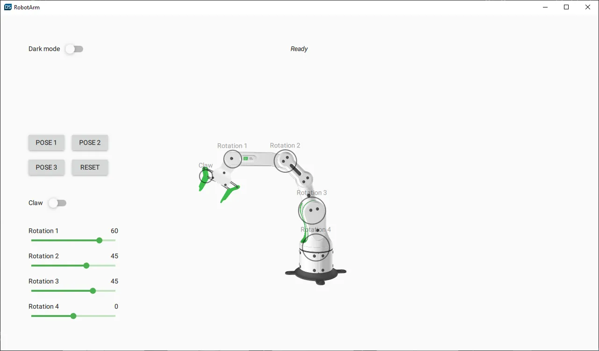
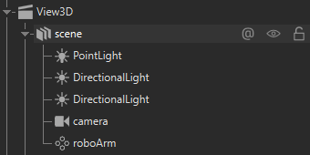
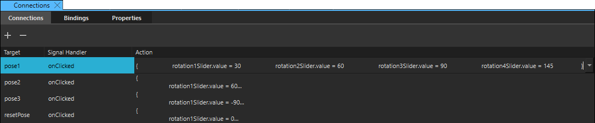

Creating a C++ Backend for a Qt Design Studio Application

The Robotarm example demonstrates adding a C++ backend to a 3D project created in Qt Design Studio.
The example itself consists of an interactive industrial robot arm in a Qt Quick 3D scene. The 2D UI to control the robot arm is implemented using Qt Quick Controls.
You can open the example from the Examples tab on the Welcome page in Qt Design Studio.
To complete this tutorial, you need experience in using Qt Design Studio and Qt Creator as well as knowledge in C++ programming.
The Designer-Developer Workflow
This section describes the high-level steps for creating the robot arm example.
Creating the User Interface
First, the designer creates the user interface in Qt Design Studio.
- Create a new 3D project.
- Import the 3D asset (RoboticArm).
- Create the following custom components:
- NodeIndicator: This component consists of a rounded rectangle and a label. It is used to indicate which joint in the robotic arm is currently active. Located in the 3D scene, it follows the movement of the 3D model.
- LabeledSlider: This component is a slider with a label. It is connected to the rotation of the different robot arm parts so that you can use it to control the rotation of those parts.
- Toggle: This component consists of a switch and a label. It is used in two places; to toggle dark mode and to toggle the claw of the robotic arm.
- Backend: This serves as a mock backend for the Qt Design Studio application. Once you open, compile, and run the application in Qt Creator, it uses the C++ backend.
- Add the 3D model and lights to the View3D scene.

- Create the 2D UI controls:
- Four buttons for preset positions. As you can see from the Connections tab in the Connections view, each button changes the rotation of the robot arm parts.

- Four sliders for controlling the robot arm parts individually. The Backend component uses these sliders to control the robot arm position.
- A switch to control the robot arm claw. This is also done through the Backend component.
- A switch to toggle dark mode of the application.
- A label to display the status of the robot arm through the Backend component.
- Four buttons for preset positions. As you can see from the Connections tab in the Connections view, each button changes the rotation of the robot arm parts.
Creating the C++ Backend
With the frontend and user interface created, it is time to create the C++ backend.
To open the project in Qt Creator:
- Open
CMakeLists.txtlocated in the root folder of the robot arm example. This is the CMake project file. - In Qt Creator, add the empty C++ backend classes in the
backendfolder. - Ensure that the
CMakeLists.txtfile in thebackendfolder has the classes in it. It should look something like this:find_package(Qt6 REQUIRED COMPONENTS Gui) qt_add_qml_module(backend URI Backend VERSION 1.0 SOURCES animatedparam.cpp animatedparam.h backend.cpp backend.h ) target_link_libraries(backend PRIVATE Qt6::Gui) - Add the backend logic to the created backend classes.